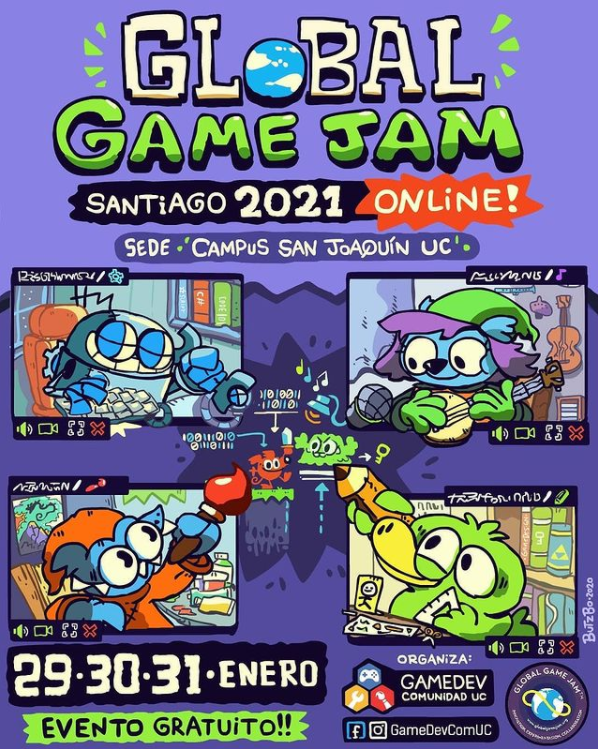
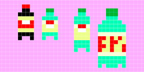
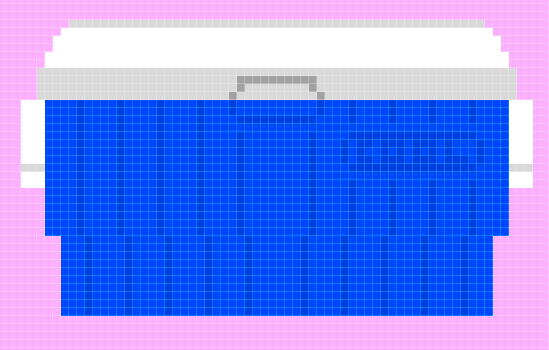

Quiero aprender a diseñar y programar jueguitos, y los pienso colgar acá.
Cosa que podamos liberar juntxs unos cuantos gramos de endorfina,
y perdernos en la fantasía del medio virtual.
/////////////////////////
Global Game Jam 2022 - WOLFIE
Testimonio de un todólogo con un complejo de liderazgo
17-09-22
Y, en enero de 2022, una nueva Global Game Jam salvaje apareció. Compartí el afiche en instagram, y rápidamente se armó un equipo con dos amigues que conocí en animación de UNIACC, que se encargarían del arte <3 El día del evento se sumó una programadora y el equipo quedó completiwi.
La temática de esta versión resultó ser "DUALIDAD". Luego de descartar una idea de un robot jardinero que regara plantitas en marte, decantamos en un plataformas 2D protagonizado por un hombre-lobo, donde las mecánicas cambiaran dependiendo si era de día y noche (a lo Castlevania).
Como sagradamente ocurre en estas instancias: fue un fin de semana estimulante pero súper cansador. Asumí el rol de diseñador de niveles y coordinador, picando de repente crear efectos de sonido, dibujar uno que otro asset en pixel art, y hasta programé un par de mecánicas en Godot.
Fue una experiencia bonita. Valoro especialmente que con mi compañera programadora nos organizamos a través de Github, y pude entender desde la práctica las ventajas de usar ese tipo de plataformas.
Participé en la Global Game Jam en su versión 2021, totalmente online por el virus conchetumare.
La modalidad me resultó cómoda. Se centralizó todo a través de Discord, y usamos un servidor dedicado para trabajar. Tuve el privilegio de poder hacer equipo con el Nahi, a quién ya conocía por el mundillo de la música y a quién considero un grosso. Se sumaron al equipo Meli y Alejandro, con basta experiencia también.
Así fue como trabajamos en "INTERMORFOS", una pequeña experiencia de interacción visual, donde un curioso personaje se encarga de distribuir distintos elementos que hacen evolucionar a sus amigues interplanetarios. La temática de la Jam fue "Buscar y encontrar". Después de iterar bastantes ideas sobre búsqueda de señal y necesidades de comunicación, decantamos en esta idea concreta.
Desde una mirada crítica, no siento que el juego tenga una mecánica de juego. Es más bien un sistema que permite cierto progreso. De todas formas, creo que la presentación que logramos es más que aceptable, y cualquier prototipo concreto que pueda salir de una Jam me parece que es un éxito del que alegrarse.
Luego de la Jam logramos arreglar un par de aspectos para mejorar el feedback hacia los jugadores, para que exista una mayor noción de que se están logrando cosas.
Y sí. No he vuelto a agarrar Unity durante los 6 meses que pasaron desde que postié lo de antes. El dibujo digital me atrapó celosamente, y poco hice fuera de eso.
No tenía intenciones de cambiar la brújula hasta que me topé con que en dos semanas más se realizará la Global Game Jam 2021 de manera no presencial, y démosle pos (además, es gratis). Espero que sea una instancia bacán para aprender y desarrollar la creatividad todavía más.
Lo paradógico quizás es que caché el evento porque me puse a seguir al Butzbo, por seguir al Puklin, por estar más pendiente los ilustradores y dibujantes de Chile.
No me tengo mucha fe armando un equipo con amigos o gente desconocida para desarrollar esto en 48 horas.
No se descarta todavía, pero mientras tanto voy a retomar "StayCool" para tener un poco más frescos los conocimientos de Unity.
En paralelo también quiero terminar algunos dibujos, escribir una viñeta, postular a weás y aprender otros softwares. Haciendo malabares con el tiempo y con las calorías cerebrales.
Vamo a cachar cómo se anda

En 3D y IMAX
Proyecto de juego "StayCool"
Objetivos y planteamiento
20-06-20
Después de haber cachureado una serie de tutoriales piola de Unity y C#, me siento en condiciones de concretar un pequeño primer proyecto. La idea es armar un juego en tres partes con diferentes niveles de complejidad:
Versión 1: Jugador se pueda mover horizontalmente y saltar. Obstáculos aparecen desde un costado, algo así como el dinosaurio de Google Chrome cuando uno se queda sin internet. La idea es que el juego se termine cuando el Jugador es alcanzado por un obstáculo y exista una tabla de puntaje que registre los saltos exitosos.
Versión 2: A partir de la versión 1, generar una dinámica más compleja donde los obstáculos colisionen con el jugador y en vez de "matarlo" lo empujen hacia fuera de la plataforma principal. Darle una vuelta a esta mecánica para que quede un poco más desafiante y entrete.
Versión 3: A partir de la versión 2, pulir la presentación y testearlo con otras personas. Hacer un menú de inicio, selección de personajes, instrucciones, música de fondo y esa onda.
Versión X: multijugador local: A partir de la versión 3, incorporar la posibilidad de jugar de hasta cuatro personas, con el mismo objetivo y sistema. La idea es que se interrumpan entre sí, y que hayan distintos pesos y tamaños de botellas. Tiempo limitado pero se "revive" al caerse (referencia).
Para las gráficas tengo pensado usar unos pequeños assets de botellitas, coolers y hielos, inspirados un poco en marcas de bebida baratellis como "Fruna" o "Serrano", todo en pixel art muy chiquitito de baja resolución. A la derecha de este posteo se puede ver lo que llevo.
Vamo a ver cómo sale.

Figura 1. Botellitas

Figura 2. Cooler
Prueba de exportación desde Unity
También conocido como: juego culiao penca en primera persona
23-05-2020
Maqueta prefabricada para llegar y exportar. Quería colgarlo acá en el website para ver como se veía. Lo que sí, le cambié los colores a las baldosas a un rosado chillón, para que se vea más cool. También le agregué una habitación vacía a mano izquierda para alimentar el lore.
Bueno, resultó :) Aki va:
Global Game Jam 2016 - T.U.E.C
Desarrollando un videojuego en 48hrs, casi
17-09-22
Por el año 2016 yo tenía 22 años. Mi quehacer artístico estaba más enfocado en ese tiempo en Jaguarbana y en pasar mis ramos. No recuerdo bien cómo y por qué me inscribí en esta experiencia, pero ahí llegué, al campus de la UC, con un computador en la mochila y un teclado midi en mano, dispuesto a componer la banda para un juego hecho por perfectos desconocidos.
Ese día había llegado de la playa, y los equipos ya estaban armados en el momento que entré. Hablé con los organizadores, y me juntaron junto a otro cabro que estaba más o menos en las mismas (él venía de Villa Alemana), para luego sumarnos a otros tres cabros que se conocían de antes, a quién me referiré simplemente como "metaleros".
Los "metaleros" deben haber sido compañeros de una carrera tipo programación. No sé, porque la verdad no hablamos mucho. Creo que hubo cero comunicación e interés por compartir desde un comienzo. El tema de ese año para la Jam resultó ser "RITUAL", y recuerdo como uno de estos niños sólo se limitó a ponerse a dibujar fantasía medieval en pixel art, sin preocuparse en cómo aterrizaríamos la idea a un juego real.
Esa tarde la pasé enchufado con audífonos a mi proyecto en Cubase, tratando de crear sonidos y ambientes que se asemejaran a cavernas y criptas.
Al otro día los chiquillos rockeros no llegaron. Nos dejaron plantados. Lo que significaría que yo y mi compadre de Villa Alemana seríamos los encargados de enfrentar la titánica tarea de terminar el juego entre dos personas. Rápidamente acordamos en hacer un juego sencillo: un combate 2D en una pantalla tipo Megaman-X contra un enemigo implacable.
El Ritual más o menos se abordó en el inicio del juego, donde desde la soledad habría que disparar a la cabeza de la bestia, la cual despertaría y daría comienzo a la batalla.
Quizás mi afinidad con la electrónica fue perfilando la estética futurista de neón que el juego fue tomando. Un animador que se encontraba trabajando en otro grupo nos ayudó, amablemente, con los assets para el protagonista y enemigo. Un fondo negro, simple, y colores brillantes, terminaron consolidando la identidad gráfica de "T.U.E.C", acrónimo de "The Ultimate Electro Challenge".
Lo último relevante que me gustaría destacar fue cuando tuvimos que presentar el juego, en vivo frente a los participantes. Un proyector en medio de la bilbioteca propició el ambiente solemne, y pienso que en el momento que el monstruo del juego cobra vida se generó buena expectativa.
Me tocó a mí controlar al personaje para la demostración. Debo decir que este juego es DIFÍCIL. Apuntamos a generar una experiencia desafiante y (por qué no) un poco frustrante. Fue maravolloso sobrevivir hasta la transformación del enemigo, y sentir una conmoción por parte de la audiencia.